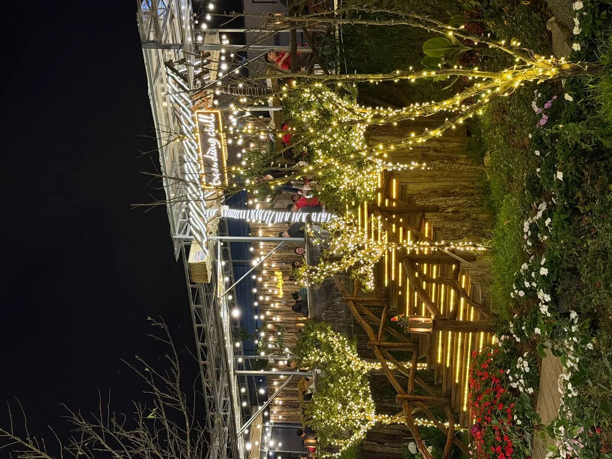

Vì sao nướng BBQ ngoài trời ở Đà Lạt đặc biệt?
Ở Sài Gòn hay Hà Nội, nướng BBQ ngoài trời thường nóng bức, khói bụi. Nhưng tại Đà Lạt, với khí hậu 18-22°C quanh năm, bạn có thể ngồi ngoài trời thoải mái suốt buổi tối. Không khí trong lành, gió nhẹ mang theo mùi thông — cảm giác như đang picnic giữa thiên nhiên châu Âu.
Top trải nghiệm nướng ngoài trời tại Trạm Dừng Chill
Tại Trạm Dừng Chill, toàn bộ bàn ăn đặt ngoài trời với view thung lũng 180 độ. Bạn tự tay nướng thịt trên bếp than hoa, vừa nướng vừa ngắm hoàng hôn, xe lửa và biển sao nhà lồng. Không gian mở thoáng đãng, không bí khói.


Mẹo nướng BBQ ngoài trời ở Đà Lạt
Mang theo áo khoác mỏng vì Đà Lạt về đêm khá lạnh (15-18°C). Đến sớm lúc 16:30-17:00 để bắt trọn hoàng hôn. Gọi combo nướng + lẩu để vừa nướng vừa ăn lẩu nóng — sự kết hợp hoàn hảo trong tiết trời se lạnh.

So sánh nướng ngoài trời vs trong nhà
Nướng ngoài trời có ưu điểm: không gian thoáng, view đẹp, khói thoát nhanh, không bị ám mùi. Nhược điểm: phụ thuộc thời tiết. Tuy nhiên tại Đà Lạt, ngay cả mùa mưa cũng thường chỉ mưa chiều sớm rồi tạnh — buổi tối vẫn nướng được.
Kết luận
Nướng BBQ ngoài trời Đà Lạt là trải nghiệm nhất định phải thử. Và Trạm Dừng Chill là nơi mang đến trải nghiệm nướng ngoài trời trọn vẹn nhất với view 3 trong 1. Đặt bàn ngay!